| Variable | Percent_Missing |
|---|---|
| SmokeNow | 57.1 |
| AlcoholDay | 34.3 |
| HHIncomeMid | 8.6 |
| log_income | 8.6 |
| BPSysAve | 3.7 |
| Education | 3.5 |
| BMI | 0.9 |
| SleepHrsNight | 0.2 |
| Age | 0.0 |
| Race1 | 0.0 |
| Gender | 0.0 |
| PhysActive | 0.0 |
Linear Regression Analysis - Predicting Body Mass Index
1 Introduction to Linear Modeling
The goal is to explain wich factors are associated with BMI in US adults (NHANES dataset), controling for demographics (age, gender, race, education), socio-economic indicators (education, income) and lifestyle (sleep, physical activity, alcohol, smoking). We will start simple and incrementally extend to a multiple linear regression, also adding multiple regression effects that are conditional on the other covariates in the model.
1.1 Linear Models for BMI
Body Mass Index (BMI) is a continuous variable calculated as weight (kg) divided by height squared (\(m^{2}\)). BMI is a proxy for body fat and is strongly related to chronic diseases such as diabetes, cardiovascular disease and hypertension.
In this analysis, we use NHANES adult participants (Age >= 18) to examine how demographics, socioeconomic status and lifestyle behaviors are associated withBMI
1.2 Model Specifications
We model BMI as a linear function of selected predictors:
BMI = \(\beta_0\) + \(\beta_1\) * Age + \(\beta_2\) * Gender + \(\beta_3\) * Race + \(\beta_4\) * Education + \(\beta_5\) * log(Income) + \(\beta_6\) * PhysActive + \(\beta_7\) * SleepHrs + \(\beta_8\) * SmokeNow + \(\beta_8\) * AlcoholDay + \(\epsilon\)
Where:
- \(\beta_0\) is the intercept (BMI)
- \(\beta_1\)…\(\beta_8\) are the regression coefficients representing the effect on each predictor.
- \(\epsilon\) represents the random error term (assumed that it is normally distributed)
1.3 Reasearch Questions
- After adjusting for covariates, how does BMI vary with Age?
- Do demographic factors (Gender, Race, Education) show overall association with BMI?
- Are lifestyle factors (PsyActive, AlcoholDay, SleepNight, SmokeNow) associated with BMI, and how much?
- How much variance is explained by the model?
2 Data processing
- Population: NHANES adults (Age \(\geqslant\) 18).
- Variables: Age; Gender; Race1; Education; HHIncomeMid (we used log transform); PhysActive; SleepHrsNight; AlcoholDay; SmokeNow; BPSysAve. Factor coding: treatment contrasts (reference vs others).
- Missing data strategy (baseline): Complete-case analysis on these variables to keep the workflow transparent.
NoteHandling Missing Values
We included only adults (≥ 18 years). BMI in children is interpreted with age- and sex-specific percentiles, so combining adults and minors would yield non-comparable BMI categories and biased estimates. We created log_income = log(HHIncomeMid). We then used a complete-case dataset for baseline modeling (all variables observed), retaining 27.5% of the adult sample.
AlcoholDay/SmokeNow are driving most most of the loss.
3 Exploratory Analysis (EDA)
3.1 Outcome distribution (BMI)
Summary statistics: mean, median, SD, quantiles:
The response variable, Body Mass Index (BMI), ranged from 15.0 to 81.2 kg/m² with a mean of 28.8 kg/m² (SD = 6.65, median = 27.8).
Approximately 33% of participants were classified as overweight (25 ≤ BMI < 30) and 33% as obese (BMI ≥ 30), reflecting the high prevalence of excess weight in the U.S. adult population.
The distribution exhibited moderate right skewness (skewness = 1.2), indicating a longer tail with high BMI values
| Mean | Median | SD | Min | Max | Q1 | Q3 | IQR | Skewness |
|---|---|---|---|---|---|---|---|---|
| 28.3 | 27.3 | 6.2 | 15 | 67.8 | 24 | 31.6 | 7.6 | 1.2 |
| BMI Category | Patient Count | Percentage (%) |
|---|---|---|
| Underweight | 35 | 1.7 |
| Normal | 652 | 31.7 |
| Overweight | 687 | 33.3 |
| Obese | 686 | 33.3 |
NoteBMI Distribution plot and outlier detection
Distribution plot of BMI (histogram + density curve)
The distribution of the BMI variable is right-skweed as shown in the overview. This shows that most people are around the average BMI in the data; however, some have very high BMI
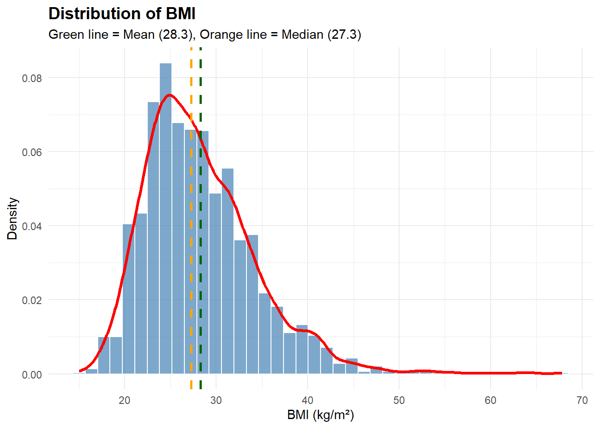
The box plot indicates that there are no outliners in the lower part ofthe distribution. The lower threshold is at approximately 13, while the upper threshold is approximately at 43.
In contrast the upper tail displays a substantial number of extreme values, with 43 observations identified as outliers.
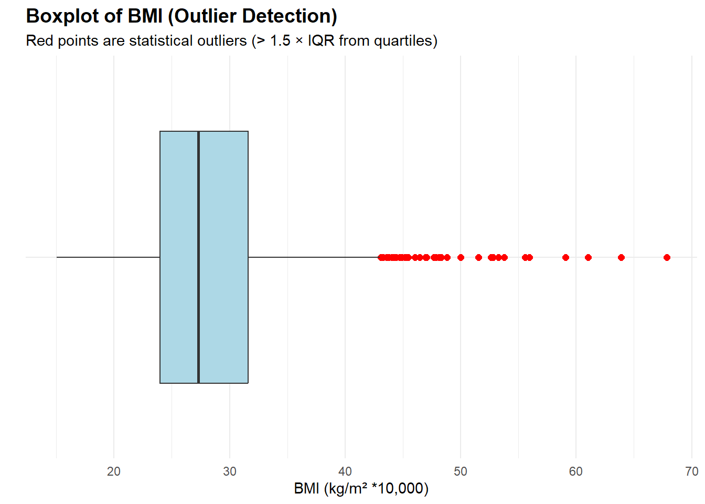
Although the BMI distribution shows high-value observations, these values fall within plausible physiological ranges for the NHANES population. Therefore, no outliers were removed.
3.2 Summary of Exploratory Data Analysis BMI vs predictors
Among all variables examined, physical activity, race/ethnicity, and education level showed the strongest associations with BMI. Physically active individuals had noticeably lower BMI on average, and several race and education groups displayed meaningful mean differences. In contrast, most continuous predictors such as age, income, sleep hours, blood pressure, and alcohol use—showed very weak correlations and offered limited linear explanatory power. Please see below in the collapsed section for the full EDA.
NotePairwise relationships with BMI
3.3 Pairwise relationships with BMI (continuous predictors)
BMI vs Age
The scatterplot with a LOESS smoother shows that BMI remains largely consistent across age groups. The Pearson correlation coefficient (r = 0.0144721) indicates virtually no linear association between age and BMI.
The corresponding coefficient of determination (\(R^{2}\) = 0.0002094) confirms that age explains less than 0.02% of the variance in BMI. This suggests that BMI is not influenced by age in this sample, and other demographic or lifestyle variables likely play a more substantial role in determining BMI.
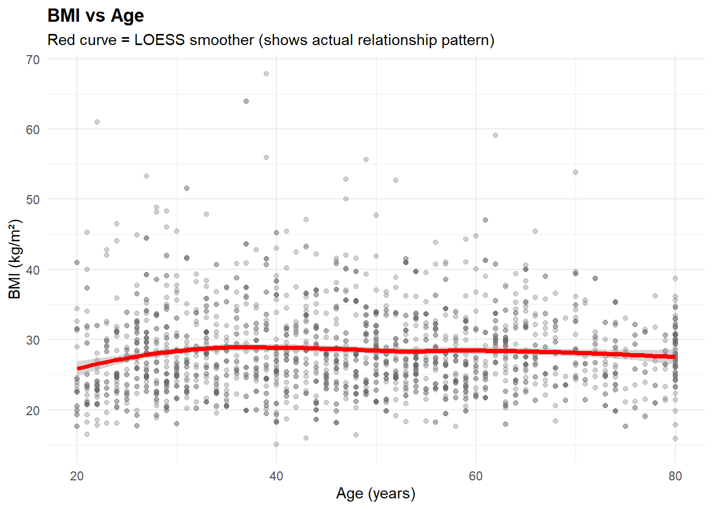
BMI vs log(income)
The scatterplot with a LOESS smoother shows a weak negative association between BMI and the logarithm of household income.
The Pearson correlation coefficient (r = -0.0504988) confirms that higher income is associated with slightly lower BMI values. However, this relationship is very weak (\(R^{2}\) = 0.00255), indicating that household income explains less than 1% of the variance in BMI.
Although the direction aligns with the expected negative relationship for higher income, the effect size suggests that income has minimal influence on BMI in this sample.
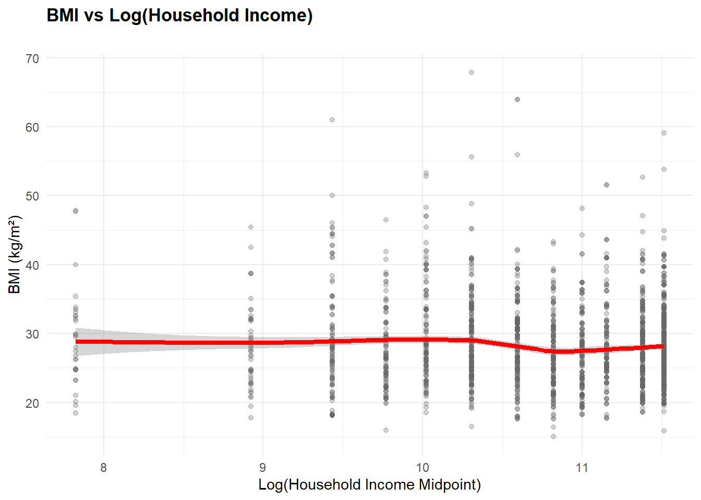
BMI vs Sleep
BMI shows a negligible linear association with sleep duration (r = -0.0321021; \(R^{2}\) ≈ 0.001031).
The LOESS smoother suggests a shallow U-shape, with the lowest BMI at approximately 7.5 hours of sleep and slightly higher BMI at both shorter and longer durations.
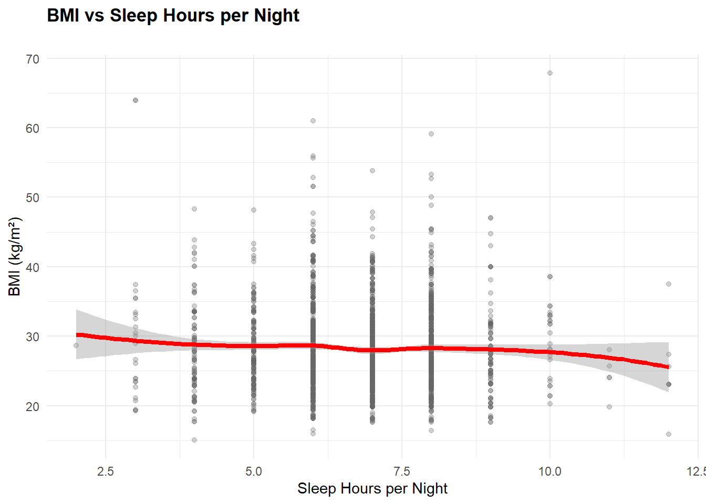
BMI vs Systolic Blood Presure
Although we expected a strong positive relashionship between BMI and systolic blood pressure, the data shows only a very week positive trend. The LOESS curve suggests a small increase in BP with BMI initially, but then the relashioship plateus and even goes down slightly. This indicates that systolic blood presure alone is not a predictor in this sample.
BMI is expected to predict high blood pressure, but the data may not show this since many patients manage their blood pressure with medication.
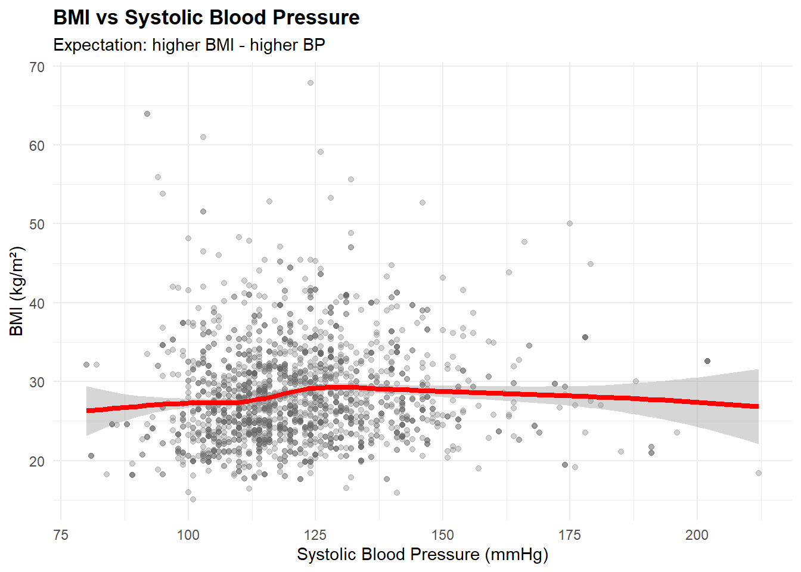
BMI vs AlcoholDay
The LOESS curve is nearly flat with a slight downward tilt. The confidence interval widens as AlcoholDay increases (due to few observations with higher values) The unajusted linear correlation is appox 0.03, meaning very little to no association with BMI.
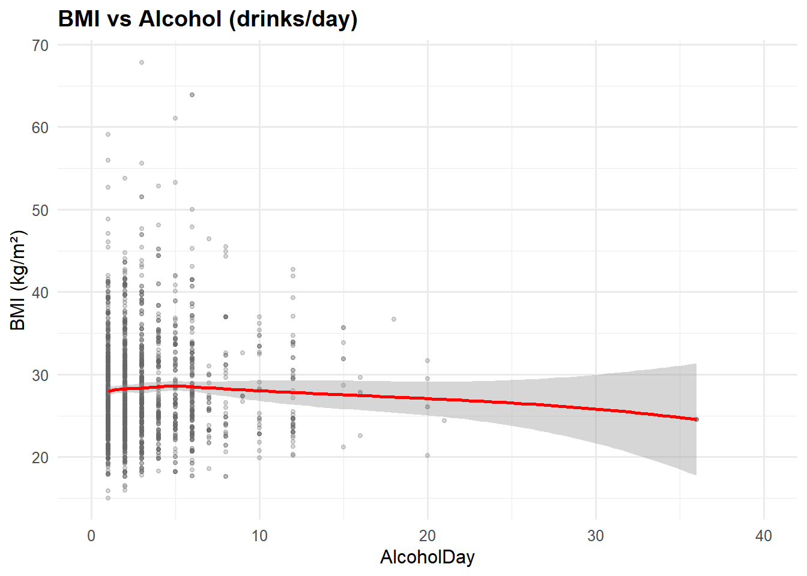
NoteAppendinx: BMI vs Alcohol Day
Below are the BMI–AlcoholDay correlations and visualizations: (i) the plot over the full 0–80 range, and (ii) the log(1 + AlcoholDay)
Show code
cor_alc <- cor(nhanes_lm$AlcoholDay, nhanes_lm$BMI)
cor_alc[1] 0.03483019(i) the plot over the full 0–80 range
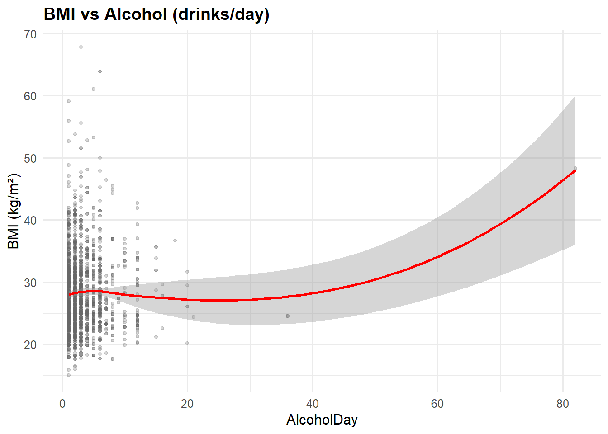
(ii) the log(1 + AlcoholDay)
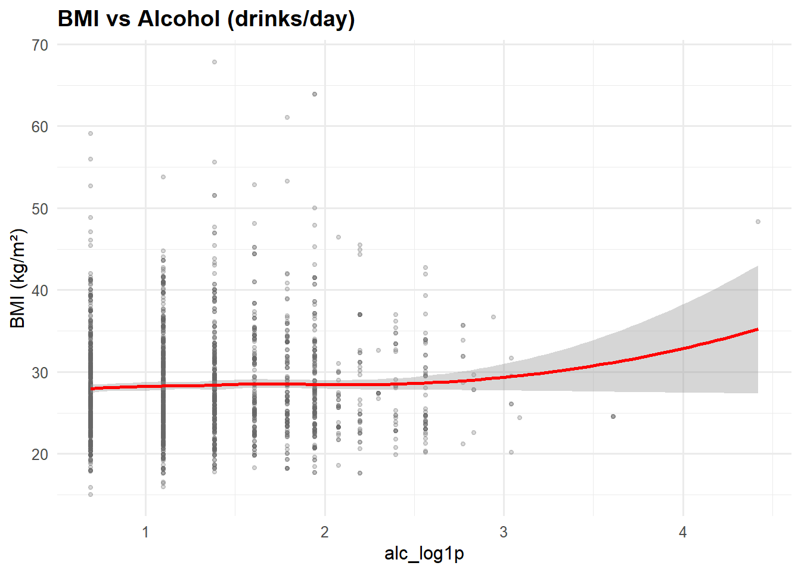
[1] 0.0240489The correlation between alcohol and BMI is even smaller when AlcoholDay is logaritmized - 0.0240489.
3.4 BMI vs Categorical predictors
BMI by Gender
In this sample the average for female and male is almost the same; however, the BMI distribution is also more variable among females, as indicated by a higher standard deviation (sd = 7.04 vs. 5.43). There is no evidence that gender plays a strong role in explaining BMI differences in this sample.
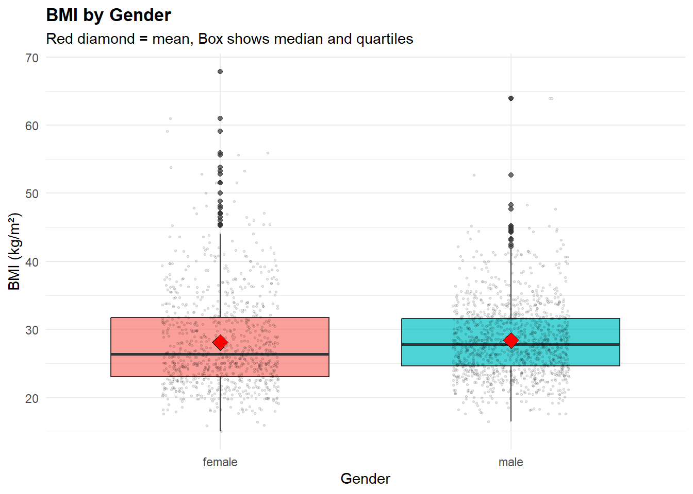
BMI by Physical Activity
On average, individuals that reported being physically active have a lower BMI (mean ≈ 27.9 kg/\(m^{2}\)) than those who are not (mean ≈ 29.9 kg/\(m^{2}\)). There is very strong evidence for a difference in BMI between physically active and inactive individuals (p < 2.2 × \(10^{-16}\)), with an estimated mean difference of approximately 2.0 units (95% CI: [1.68, 2.36] kg/\(m^{2}\)). BMI is also more variable among inactive individuals (SD = 6.9 vs. 5.3), indicating a wider spread of body weight outcomes in this group.
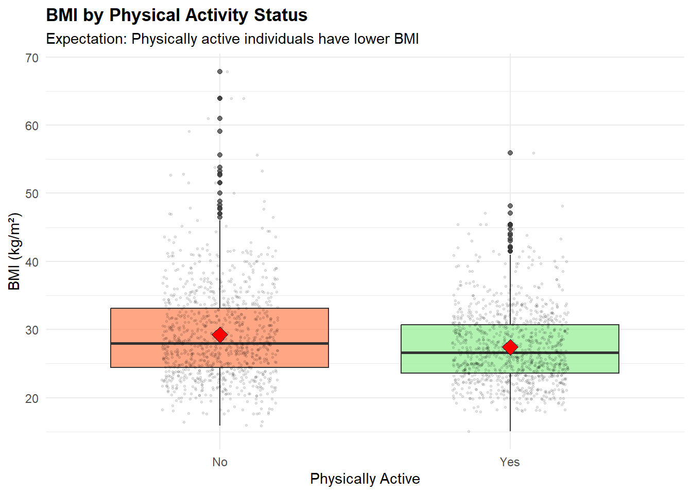
NoteAppendix: Physical Activity Stats and T-test
| PhysActive | n | Mean_BMI | SD_BMI | Median_BMI |
|---|---|---|---|---|
| No | 989 | 29.2 | 6.9 | 28.0 |
| Yes | 1071 | 27.4 | 5.3 | 26.6 |
Welch Two Sample t-test
data: BMI by PhysActive
t = 6.6975, df = 1847.8, p-value = 2.805e-11
alternative hypothesis: true difference in means between group No and group Yes is not equal to 0
95 percent confidence interval:
1.285537 2.350209
sample estimates:
mean in group No mean in group Yes
29.22283 27.40496 BMI vs Education
In this sample, individuals who reported having a Colledge Graduate had a lower mean (mean ≈ 27.1 kg/\(m^{2}\)) compared with rest of the groups (mean ≈ 28.2 - 29.2 kg/\(m^{2}\)). The one-way ANOVA test provides strong evidence that the mean BMI differs across education levels (p < 0.001). However the coefficient of deteermination R2 = 0.0126791 indicates that the education level only explains 1.3% in the BMI variation. This means that, while the difference is statistically significant, its practical importance is very small.
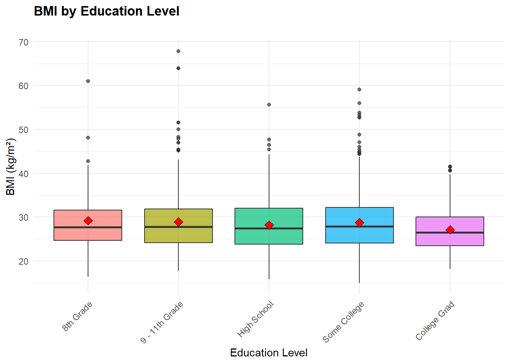
NoteAppendix: Education Stats and Anova and
| Education | n | Mean_BMI | SD_BMI | Median_BMI |
|---|---|---|---|---|
| 8th Grade | 94 | 29.2 | 6.9 | 27.7 |
| 9 - 11th Grade | 299 | 28.9 | 7.6 | 27.8 |
| Some College | 690 | 28.7 | 6.2 | 27.9 |
| High School | 491 | 28.2 | 6.0 | 27.4 |
| College Grad | 486 | 27.1 | 4.9 | 26.5 |
Anova
Df Sum Sq Mean Sq F value Pr(>F)
Education 4 990 247.4 6.598 2.84e-05 ***
Residuals 2055 77068 37.5
---
Signif. codes: 0 '***' 0.001 '**' 0.01 '*' 0.05 '.' 0.1 ' ' 1Tukey
Tukey multiple comparisons of means
95% family-wise confidence level
Fit: aov(formula = BMI ~ Education, data = nhanes_lm)
$Education
diff lwr upr p adj
9 - 11th Grade-8th Grade -0.2721042 -2.249181 1.70497290 0.9957664
High School-8th Grade -1.0267140 -2.909063 0.85563478 0.5696549
Some College-8th Grade -0.4749704 -2.313186 1.36324503 0.9553039
College Grad-8th Grade -2.0699378 -3.953842 -0.18603377 0.0229035
High School-9 - 11th Grade -0.7546099 -1.981100 0.47188025 0.4467253
Some College-9 - 11th Grade -0.2028662 -1.360483 0.95475066 0.9893126
College Grad-9 - 11th Grade -1.7978337 -3.026709 -0.56895799 0.0006415
Some College-High School 0.5517436 -0.435414 1.53890127 0.5455991
College Grad-High School -1.0432238 -2.113055 0.02660738 0.0600524
College Grad-Some College -1.5949674 -2.585087 -0.60484745 0.0001120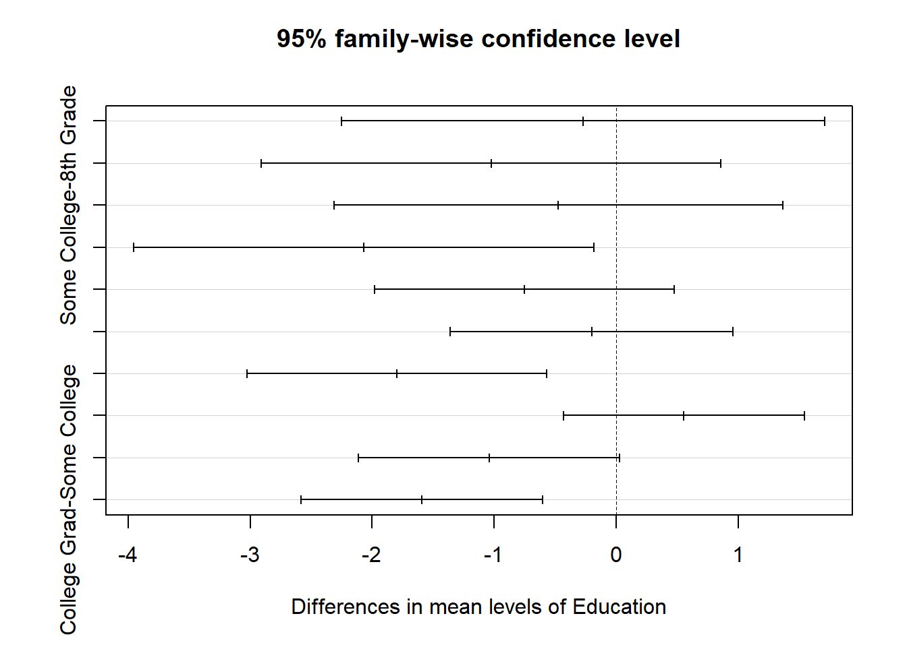
BMI by Race
In this sample Black and Mexican groups show higher average BMI than White, while “Other” is lower; the boxplots (red diamonds = means) reflect these shifts.
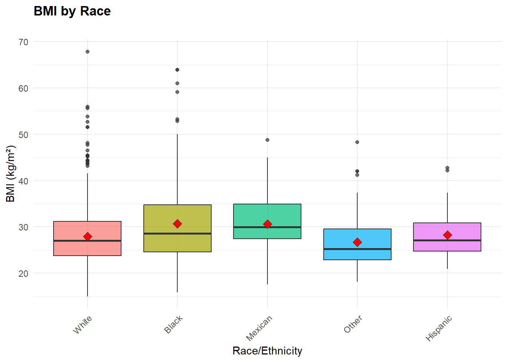
NoteAppendinx: Race Stats and Anova
# A tibble: 5 × 5
Race1 n Mean_BMI SD_BMI Median_BMI
<fct> <int> <dbl> <dbl> <dbl>
1 Black 187 30.7 8.82 28.6
2 Mexican 125 30.6 5.72 30.0
3 Hispanic 83 28.3 4.79 27.1
4 White 1561 27.9 5.78 27
5 Other 104 26.7 5.71 25.2Call:
aov(formula = BMI ~ Race1, data = nhanes_lm)
Terms:
Race1 Residuals
Sum of Squares 2263.28 75794.92
Deg. of Freedom 4 2055
Residual standard error: 6.073152
Estimated effects may be unbalancedOne-way ANOVA indicates a significant overall difference across Race1 (p < 0.001); pairwise Tukey comparisons can then identify which specific pairs differ.
BMI vs Smoke
Smokers show an approximate 1.1 kg/\(m^{2}\) lower mean BMI than non-smokers. The T-test result tells us that there is very strong evidence that the median BMI between non-smokers and smokers is not zero.(appendix)
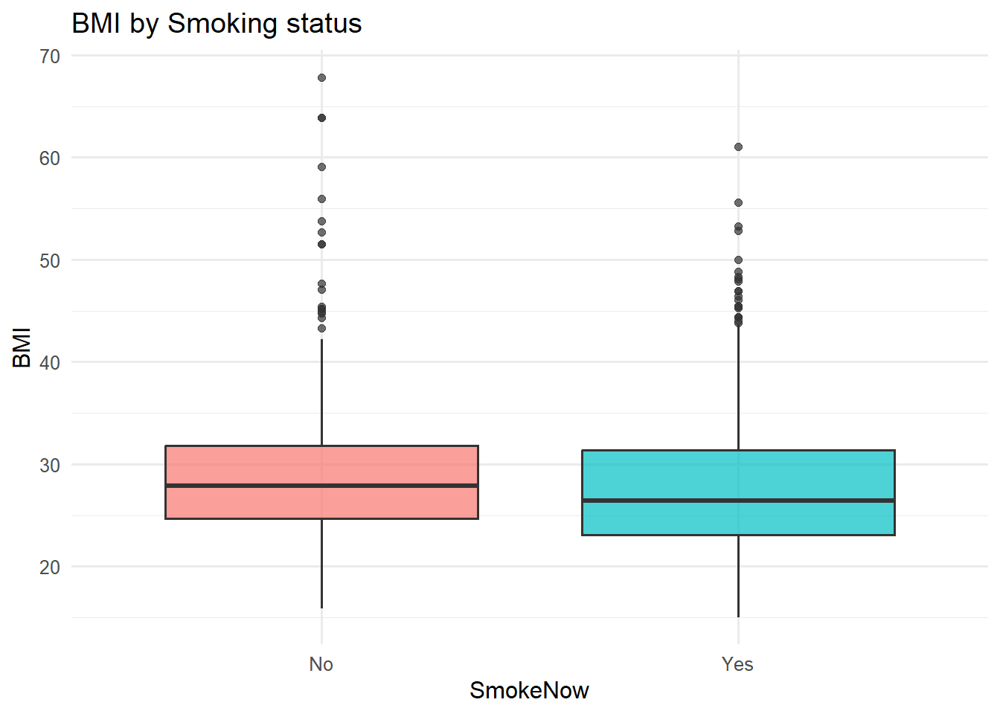
NoteAppendix: BMI~Smoke t-test
Show code
t_test_Smoke <- t.test(BMI ~ SmokeNow, data = nhanes_lm)
t_test_Smoke
Welch Two Sample t-test
data: BMI by SmokeNow
t = 4.1853, df = 1947.8, p-value = 2.974e-05
alternative hypothesis: true difference in means between group No and group Yes is not equal to 0
95 percent confidence interval:
0.6065475 1.6762202
sample estimates:
mean in group No mean in group Yes
28.79577 27.65439 4 Linear Model
Summary of Linear Modeling Progression (Collapsed Below)
To reach the final interaction model, we estimated a sequence of nested linear models. The simple BMI ~ Age regression showed no meaningful association, and adding basic demographics improved the fit only slightly, with race contributing the most. Socioeconomic factors provided minimal additional explanatory power. Lifestyle and clinical variables strengthened the model somewhat, with physical activity, smoking status, systolic blood pressure, and race emerging as the most consistent predictors of BMI. All earlier models and their outputs are collapsed below, while the final interaction model remains visible for interpretation.
NoteLinear Modeling Progression
4.1 BMI ~ Age
We are starting with a simpler linear model
The intercept is 28.01 kg/\(m^{2}\). The interpretation has no meaning as it represents the BMI at age 0 for an adult. (part of the linear fit)
The slope is 0.005 kg/\(m^{2}\) and the interpretation would be that for the each year increase the BMI will increase with 0.005. The p value is 0.512 and we can say that in this linear model there is no evidence of a linear assocciation between BMI and Age.
With a fit \(R^{2}\) = 0.0002 (adj. \(R^{2}\) = -0.0002) Age explaines none of the variability in BMI
Show code
m_age <-lm(BMI ~ Age, data = nhanes_lm)Show code
#summary(m_age)
age_sum <- tidy(m_age, conf.int = TRUE)
#age_sum
age_fit <- glance(m_age)[, c("r.squared","adj.r.squared","sigma","nobs")]
kable(age_sum, digits=3, caption="BMI ~ Age: coefficient table (with 95% CI)")| term | estimate | std.error | statistic | p.value | conf.low | conf.high |
|---|---|---|---|---|---|---|
| (Intercept) | 28.018 | 0.418 | 67.033 | 0.000 | 27.198 | 28.838 |
| Age | 0.005 | 0.008 | 0.657 | 0.512 | -0.011 | 0.022 |
Show code
#kable(age_fit, digits=3, caption="BMI ~ Age: model fit")
age_fit# A tibble: 1 × 4
r.squared adj.r.squared sigma nobs
<dbl> <dbl> <dbl> <int>
1 0.000209 -0.000276 6.16 20604.2 Model 1: Demographic
We will add core demographic variables to the model: Age + Gender + Race
Model: BMI ~ Age + Gender + Race
We fit a multiple linear model with BMI as the response and Age (continuous), Gender (female = reference), and Race (White = reference) as covariates.
Show code
M1 <- lm(BMI ~ Age + Gender + Race1, data = nhanes_lm)
summary(M1)
Call:
lm(formula = BMI ~ Age + Gender + Race1, data = nhanes_lm)
Residuals:
Min 1Q Median 3Q Max
-15.210 -4.209 -0.949 3.436 40.186
Coefficients:
Estimate Std. Error t value Pr(>|t|)
(Intercept) 27.117470 0.463686 58.482 < 2e-16 ***
Age 0.013510 0.008406 1.607 0.1082
Gendermale 0.221968 0.272635 0.814 0.4156
Race1Black 2.872157 0.472655 6.077 1.46e-09 ***
Race1Mexican 2.802671 0.571678 4.903 1.02e-06 ***
Race1Other -1.131178 0.619031 -1.827 0.0678 .
Race1Hispanic 0.446401 0.688336 0.649 0.5167
---
Signif. codes: 0 '***' 0.001 '**' 0.01 '*' 0.05 '.' 0.1 ' ' 1
Residual standard error: 6.071 on 2053 degrees of freedom
Multiple R-squared: 0.03055, Adjusted R-squared: 0.02772
F-statistic: 10.78 on 6 and 2053 DF, p-value: 7.701e-12Show code
# Coefficients with 95% CIs (t-tests)
# core_coef <- broom::tidy(M1, conf.int = TRUE)
# core_coef
# M1_sum <- tidy(M1, conf.int = TRUE)
# kable(M1_sum, digits=3, caption="BMI ~ Age + Gender + Race coefficient table (with 95% CI)")
# Model fit
# M1_fit <- broom::glance(M1)[, c("r.squared","adj.r.squared","sigma","df","nobs")]
# knitr::kable(M1_fit, digits = 3, caption = "Core model: fit statistics")In this model the Race differences between groups relative to White: Black (+ 2.87 kg/\(m^{2}\), p < \(10^{-8}\)) and Mexican (+2.80 kg/\(m^{2}\), p < \(10^{-6}\)) participants have a higher BMI on average, while Other shows very weak evidence that the BMI is lower on everage than White (-1.13 kg/\(m^{2}\), p < 0.068) and for Hispanix group there is no evidence that the BMI is different from White category on average (+0.45 kg/\(m^{2}\), p < 0.517). The adjusted \(R^{2}\) = 0.028, meaning that demographics only explain ~2.8% of BMI variability
F-tests for M1 (BMI ~ Age + Gender + Race1)
Show code
M1_drop1 <- drop1(M1, test = "F")
M1_drop1 Single term deletions
Model:
BMI ~ Age + Gender + Race1
Df Sum of Sq RSS AIC F value Pr(>F)
<none> 75673 7437.7
Age 1 95.20 75768 7438.3 2.5827 0.1082
Gender 1 24.43 75698 7436.3 0.6629 0.4156
Race1 4 2318.52 77992 7491.8 15.7252 1.109e-12 ***
---
Signif. codes: 0 '***' 0.001 '**' 0.01 '*' 0.05 '.' 0.1 ' ' 1Using drop1() we test each term conditional on the others. Race is associated with BMI; Age and Gender are not, at this stage.
4.3 Adding Socioeconomic factors
We are adding socioeconomic factors to our model
Show code
M2 <- update(M1, . ~ . + Education + log_income)
summary(M2)
Call:
lm(formula = BMI ~ Age + Gender + Race1 + Education + log_income,
data = nhanes_lm)
Residuals:
Min 1Q Median 3Q Max
-14.858 -4.169 -0.913 3.454 39.780
Coefficients:
Estimate Std. Error t value Pr(>|t|)
(Intercept) 28.034963 2.066514 13.566 < 2e-16 ***
Age 0.015941 0.008473 1.881 0.0601 .
Gendermale 0.191993 0.272588 0.704 0.4813
Race1Black 2.671400 0.481595 5.547 3.28e-08 ***
Race1Mexican 2.649685 0.593333 4.466 8.41e-06 ***
Race1Other -1.077031 0.623601 -1.727 0.0843 .
Race1Hispanic 0.344172 0.692346 0.497 0.6192
Education9 - 11th Grade -0.030781 0.733418 -0.042 0.9665
EducationHigh School -0.621045 0.703421 -0.883 0.3774
EducationSome College 0.164729 0.698290 0.236 0.8135
EducationCollege Grad -1.224686 0.723380 -1.693 0.0906 .
log_income -0.055827 0.185911 -0.300 0.7640
---
Signif. codes: 0 '***' 0.001 '**' 0.01 '*' 0.05 '.' 0.1 ' ' 1
Residual standard error: 6.053 on 2048 degrees of freedom
Multiple R-squared: 0.03873, Adjusted R-squared: 0.03357
F-statistic: 7.501 on 11 and 2048 DF, p-value: 9.159e-13Afteradding the Education and log_income as covariates the BMI remains higher forBlack and Mexican participants vs White. Age and particpats that are Colledge Graduates shows a very weak association with BMI. The adj. \(R^{2}\) shows an explanability of 3.4%
Term-wise F-tests
Show code
M2_drop1 <- drop1(M2, test = "F")
M2_drop1Single term deletions
Model:
BMI ~ Age + Gender + Race1 + Education + log_income
Df Sum of Sq RSS AIC F value Pr(>F)
<none> 75035 7430.2
Age 1 129.68 75165 7431.8 3.5393 0.060071 .
Gender 1 18.18 75053 7428.7 0.4961 0.481305
Race1 4 1912.91 76948 7474.1 13.0527 1.687e-10 ***
Education 4 599.27 75634 7438.6 4.0891 0.002643 **
log_income 1 3.30 75038 7428.3 0.0902 0.763989
---
Signif. codes: 0 '***' 0.001 '**' 0.01 '*' 0.05 '.' 0.1 ' ' 1Term-wise F-tests: BMI differs overall by Race and Education; Age is borderline; Gender and log(Income) show little added association (conditional on other covariates).
4.4 Adding Lifestyle & Clinical predictors
Show code
M3 <- update(M2, . ~ . + PhysActive + SleepHrsNight + AlcoholDay + SmokeNow + BPSysAve)
summary(M3)
Call:
lm(formula = BMI ~ Age + Gender + Race1 + Education + log_income +
PhysActive + SleepHrsNight + AlcoholDay + SmokeNow + BPSysAve,
data = nhanes_lm)
Residuals:
Min 1Q Median 3Q Max
-15.915 -3.999 -0.831 3.537 37.748
Coefficients:
Estimate Std. Error t value Pr(>|t|)
(Intercept) 29.573516 2.335666 12.662 < 2e-16 ***
Age -0.015609 0.009670 -1.614 0.106648
Gendermale 0.014294 0.274346 0.052 0.958454
Race1Black 3.006900 0.476562 6.310 3.42e-10 ***
Race1Mexican 2.241999 0.584376 3.837 0.000129 ***
Race1Other -0.531417 0.616321 -0.862 0.388656
Race1Hispanic 0.416809 0.679956 0.613 0.539948
Education9 - 11th Grade 0.089781 0.720029 0.125 0.900781
EducationHigh School -0.516741 0.690459 -0.748 0.454304
EducationSome College 0.253163 0.685239 0.369 0.711830
EducationCollege Grad -0.926147 0.719078 -1.288 0.197904
log_income -0.110284 0.183536 -0.601 0.547982
PhysActiveYes -1.809196 0.278270 -6.502 9.96e-11 ***
SleepHrsNight -0.082643 0.098545 -0.839 0.401770
AlcoholDay 0.074228 0.041594 1.785 0.074476 .
SmokeNowYes -2.181678 0.299600 -7.282 4.67e-13 ***
BPSysAve 0.022322 0.008524 2.619 0.008893 **
---
Signif. codes: 0 '***' 0.001 '**' 0.01 '*' 0.05 '.' 0.1 ' ' 1
Residual standard error: 5.928 on 2043 degrees of freedom
Multiple R-squared: 0.08013, Adjusted R-squared: 0.07293
F-statistic: 11.12 on 16 and 2043 DF, p-value: < 2.2e-16After adding lifestyle and clinical predictors to our Model BMI we can observe that BMI stays higher for Black and Mexican in comparision with White participants. Physically Active participants have a lower BMI, and Smoking participants have a lower BMI. Effects are conditional on the others (treatment coding); results are associations, not causal.
Term-wise F-tests
Show code
M3_drop1 <- drop1(M3, test = "F")
M3_drop1Single term deletions
Model:
BMI ~ Age + Gender + Race1 + Education + log_income + PhysActive +
SleepHrsNight + AlcoholDay + SmokeNow + BPSysAve
Df Sum of Sq RSS AIC F value Pr(>F)
<none> 71803 7349.5
Age 1 91.57 71895 7350.2 2.6055 0.106648
Gender 1 0.10 71804 7347.5 0.0027 0.958454
Race1 4 1852.00 73655 7394.0 13.1736 1.346e-10 ***
Education 4 430.36 72234 7353.8 3.0612 0.015826 *
log_income 1 12.69 71816 7347.9 0.3611 0.547982
PhysActive 1 1485.64 73289 7389.7 42.2705 9.962e-11 ***
SleepHrsNight 1 24.72 71828 7348.2 0.7033 0.401770
AlcoholDay 1 111.93 71915 7350.7 3.1848 0.074476 .
SmokeNow 1 1863.69 73667 7400.3 53.0269 4.673e-13 ***
BPSysAve 1 241.01 72044 7354.4 6.8573 0.008893 **
---
Signif. codes: 0 '***' 0.001 '**' 0.01 '*' 0.05 '.' 0.1 ' ' 1Term-wise F-tests for M3 (BMI ~ Age + Gender + Race1 + Education + log_income + PhysActive + SleepHrsNight + AlcoholDay + SmokeNow + BPSysAve)
4.5 Adding Interactions
We extended the model with prespecified interactions to test whether the association between:
- PhysActive × Gender - Based on Gender Differences in Exercise Habits and Quality of Life Reports1, physical activity patterns differ significantly by gender. Here we test whether the BMI–activity association varies by sex.
- PhysActive × Education - According to the research Education leads to a more physically active lifestyle2, “one additional year of education leads to a 0.62-unit higher overall physical activity”. We are testing if in our sample the activity–BMI association varies across socioeconomic factors (education levels).
- Gender × SmokeNow - Based on the report from Swiss association for tabacco control3, there are known gender differences in smoking paterns. In out sample we are testing whether the smoking-BMI association differs by sex.
M4 <- update(M3, . ~ . + PhysActive:Gender + PhysActive:Education + Gender:SmokeNow)
NoteModel Summary- result
Show code
summary(M4)
Call:
lm(formula = BMI ~ Age + Gender + Race1 + Education + log_income +
PhysActive + SleepHrsNight + AlcoholDay + SmokeNow + BPSysAve +
Gender:PhysActive + Education:PhysActive + Gender:SmokeNow,
data = nhanes_lm)
Residuals:
Min 1Q Median 3Q Max
-15.168 -4.057 -0.895 3.396 37.770
Coefficients:
Estimate Std. Error t value Pr(>|t|)
(Intercept) 27.726849 2.380324 11.648 < 2e-16 ***
Age -0.014841 0.009598 -1.546 0.12221
Gendermale 0.611595 0.482437 1.268 0.20504
Race1Black 2.890277 0.473409 6.105 1.23e-09 ***
Race1Mexican 2.292266 0.580298 3.950 8.08e-05 ***
Race1Other -0.520097 0.611616 -0.850 0.39522
Race1Hispanic 0.585686 0.679784 0.862 0.38902
Education9 - 11th Grade 1.154768 0.876821 1.317 0.18799
EducationHigh School -0.145821 0.849861 -0.172 0.86378
EducationSome College 0.855728 0.839405 1.019 0.30811
EducationCollege Grad 0.269230 0.937998 0.287 0.77412
log_income -0.065774 0.183019 -0.359 0.71935
PhysActiveYes -0.262527 1.337241 -0.196 0.84438
SleepHrsNight -0.099740 0.098131 -1.016 0.30956
AlcoholDay 0.084933 0.041469 2.048 0.04068 *
SmokeNowYes -0.661655 0.433203 -1.527 0.12683
BPSysAve 0.025625 0.008505 3.013 0.00262 **
Gendermale:PhysActiveYes 1.084032 0.538843 2.012 0.04437 *
Education9 - 11th Grade:PhysActiveYes -3.183134 1.482250 -2.148 0.03187 *
EducationHigh School:PhysActiveYes -1.531381 1.409680 -1.086 0.27746
EducationSome College:PhysActiveYes -2.013071 1.376690 -1.462 0.14383
EducationCollege Grad:PhysActiveYes -2.849886 1.435170 -1.986 0.04720 *
Gendermale:SmokeNowYes -2.650774 0.538496 -4.923 9.23e-07 ***
---
Signif. codes: 0 '***' 0.001 '**' 0.01 '*' 0.05 '.' 0.1 ' ' 1
Residual standard error: 5.879 on 2037 degrees of freedom
Multiple R-squared: 0.09791, Adjusted R-squared: 0.08817
F-statistic: 10.05 on 22 and 2037 DF, p-value: < 2.2e-16Interaction observation:
- Gender:SmokingNow: there is very strong evidence that smoking is linked to a lower BMI for both sexes: women ~ 0.7 kg/\(m^{2}\) lower and men ~ 3.3 kg/\(m^{2}\) compared with non-smokers.
- PhysActivity:Gender: there is evidence that difference in average BMIassociated with physical acivity in not 0 men. In the baseline group women show a small decrease with activity (~ 0.3kg/\(m^{2}\)). Men add approx 1.1 kg/\(m^{2}\) to the female difference.
- PhysActivity:Education: in lower (9–11) and higher (College) education groups, being active is associated with a noticeably lower BMI than in the 8th-grade group.
All of these interaction are conditional associations (not causal)
As we added the interaction we oberve that AlcoholDay shows a small positive association with BMI (for each additional drink a day the BMI increases with 0.085 kg/\(m^{2}\), p = 0.04), conditional on other covariates.
Term-wise F-tests
M4_drop1 <- drop1(M4, test = "F")
NoteF-test result
Show code
M4_drop1Single term deletions
Model:
BMI ~ Age + Gender + Race1 + Education + log_income + PhysActive +
SleepHrsNight + AlcoholDay + SmokeNow + BPSysAve + Gender:PhysActive +
Education:PhysActive + Gender:SmokeNow
Df Sum of Sq RSS AIC F value Pr(>F)
<none> 70416 7321.3
Age 1 82.64 70498 7321.7 2.3907 0.12221
Race1 4 1759.80 72175 7364.2 12.7270 3.116e-10 ***
log_income 1 4.46 70420 7319.5 0.1292 0.71935
SleepHrsNight 1 35.71 70451 7320.4 1.0330 0.30956
AlcoholDay 1 145.00 70561 7323.6 4.1947 0.04068 *
BPSysAve 1 313.77 70729 7328.5 9.0769 0.00262 **
Gender:PhysActive 1 139.91 70556 7323.4 4.0473 0.04437 *
Education:PhysActive 4 263.23 70679 7321.0 1.9037 0.10719
Gender:SmokeNow 1 837.64 71253 7343.7 24.2315 9.229e-07 ***
---
Signif. codes: 0 '***' 0.001 '**' 0.01 '*' 0.05 '.' 0.1 ' ' 1Term-wise F-tests summary: BMI is associated with race, systolic BP, and shows effect modification for Gender:Smoking and Gender:Physical activity. Education:Physical activity is not supported
5 Research Questions
After adjusting for covariates, how does BMI vary with Age?
Adjusted for all covariates, the term-wise F-test (drop1) shows little evidence of a linear association between age and BMI (p ≈ 0.12)
Do demographic factors show overall association with BMI?
- Race/ethnicity: Yes. Strong overall association (clear F-test).
- Education: Yes (overall main effect), but no activity–education interaction.
- Gender: No large main effect, but gender modifies the associations of physical activity and smoking with BMI.
Are lifestile factors (PsyActive, AlcoholDay, SleepNight, SmokeNow) associated with BMI, and how much?
- At the reference education (8th Grade), females show a small reduction with activity (PhysActive main term).
- Males add the Gender:PhysActive interaction, show an increase with activity.
- In 9–11th Grade and College Grad, the Education:PhysActive interactions are negative, showing that there is an associated reduction than in the reference education. However with the Drop1 test there is weak to no evidence that there is an interaction bewteen Education and PhyActive
How much variance is explained by the model?
The model’s adjusted \(R^{2}\) ≈ 0.088, so the model explains only 8.8% of the variability in BMI.
Footnotes
See PMC article.↩︎
See PMC article.↩︎